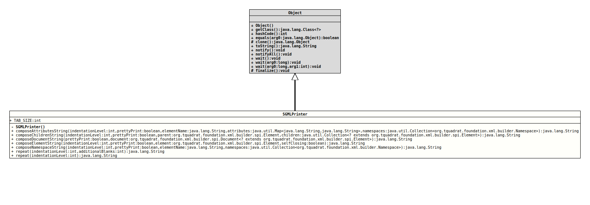

Module org.tquadrat.foundation.xml
Class SGMLPrinter
java.lang.Object
org.tquadrat.foundation.xml.builder.spi.SGMLPrinter
@UtilityClass
@ClassVersion(sourceVersion="$Id: SGMLPrinter.java 1071 2023-09-30 01:49:32Z tquadrat $")
@API(status=MAINTAINED,
since="0.0.5")
public final class SGMLPrinter
extends Object
Helper method for the conversion of SGML elements into a String.
- Author:
- Thomas Thrien (thomas.thrien@tquadrat.org)
- Version:
- $Id: SGMLPrinter.java 1071 2023-09-30 01:49:32Z tquadrat $
- Since:
- 0.0.5
- UML Diagram
-

UML Diagram for "org.tquadrat.foundation.xml.builder.spi.SGMLPrinter"
{kind=link}
-
Field Summary
FieldsModifier and TypeFieldDescriptionstatic final intThe tabulator size for pretty printing: 4 -
Constructor Summary
Constructors -
Method Summary
Modifier and TypeMethodDescriptionstatic final StringcomposeAttributesString(int indentationLevel, boolean prettyPrint, String elementName, Map<String, String> attributes, Collection<Namespace> namespaces) Returns the attributes and their values, together with the namespaces, as a single formatted string.static final StringcomposeChildrenString(int indentationLevel, boolean prettyPrint, Element parent, Collection<? extends Element> children) Returns the children as a single formatted string.static final StringcomposeDocumentString(boolean prettyPrint, Document<? extends Element> document) Returns the given document as a single formatted string.static final StringcomposeElementString(int indentationLevel, boolean prettyPrint, Element element, boolean selfClosing) Returns the given element as a single formatted string.static final StringcomposeNamespaceString(int indentationLevel, boolean prettyPrint, String elementName, Collection<Namespace> namespaces) Returns the namespaces as a single formatted string.static final Stringrepeat(int indentationLevel) static final Stringrepeat(int indentationLevel, int additionalBlanks)
-
Field Details
-
TAB_SIZE
The tabulator size for pretty printing: 4- See Also:
-
-
Constructor Details
-
SGMLPrinter
private SGMLPrinter()No instance of this class allowed.
-
-
Method Details
-
composeAttributesString
@API(status=MAINTAINED, since="0.0.5") public static final String composeAttributesString(int indentationLevel, boolean prettyPrint, String elementName, Map<String, String> attributes, Collection<Namespace> namespaces) Returns the attributes and their values, together with the namespaces, as a single formatted string.- Parameters:
indentationLevel- The indentation level.prettyPrint- The pretty print flag.elementName- The name of the owning element.attributes- The attributes.namespaces- The namespaces.- Returns:
- The attributes string.
-
composeChildrenString
@API(status=MAINTAINED, since="0.0.5") public static final String composeChildrenString(int indentationLevel, boolean prettyPrint, Element parent, Collection<? extends Element> children) Returns the children as a single formatted string.- Parameters:
indentationLevel- The indentation level.prettyPrint- The pretty print flag.parent- The parent element.children- The children.- Returns:
- The children string.
-
composeDocumentString
@API(status=MAINTAINED, since="0.0.5") public static final String composeDocumentString(boolean prettyPrint, Document<? extends Element> document) Returns the given document as a single formatted string.- Parameters:
prettyPrint- The pretty print flag.document- The document.- Returns:
- The element string.
-
composeElementString
@API(status=MAINTAINED, since="0.0.5") public static final String composeElementString(int indentationLevel, boolean prettyPrint, Element element, boolean selfClosing) Returns the given element as a single formatted string.
The argument
selfClosingexists for some HTML elements like<script>; in pure XML, all elements are self-closing when empty, while other flavours may define elements that always need a closing tag. Therefore… <script/> …is valid in pure XML, but not in HTML where it has to be
… <script></script> …- Parameters:
indentationLevel- The indentation level.prettyPrint- The pretty print flag.element- The element.selfClosing-trueif an empty element is self-closing orfalseif an empty element still needs a closing tag.- Returns:
- The element string.
-
composeNamespaceString
@API(status=MAINTAINED, since="0.0.5") public static final String composeNamespaceString(int indentationLevel, boolean prettyPrint, String elementName, Collection<Namespace> namespaces) Returns the namespaces as a single formatted string.- Parameters:
indentationLevel- The indentation level.prettyPrint- The pretty print flag.elementName- The name of the owning element.namespaces- The namespaces.- Returns:
- The namespaces string.
-
repeat
@API(status=MAINTAINED, since="0.0.5") public static final String repeat(int indentationLevel, int additionalBlanks) Returns a String, consisting only of blanks, with the length that is determined by the given indentation level, multiplied by the
TAB_SIZE(= 4), plus the given number of additional blanks.Negative values for either the indentation level or the number of additional blanks are treated as 0.
- Parameters:
indentationLevel- The indentation level.additionalBlanks- The number of additional blanks.- Returns:
- The resulting String.
-
repeat
Returns a String, consisting only of blanks, with the length that is determined by the given indentation level, multiplied by theTAB_SIZE(= 4).- Parameters:
indentationLevel- The indentation level; a negative value is treated as 0.- Returns:
- The resulting String.
-